This was first published on https://www.dbi-services.com/blog/running-sql-server-on-the-oracle-free-tier/ (2020-02-08)
Republishing here for new followers. The content is related to the versions available at the publication date.
The Oracle Cloud is not only for Oracle Database. You can create a VM running Oracle Linux with full root access to it, even in the free tier: a free VM that will be always up, never expires, with full ssh connectivity to a sudoer user, where you are able to tunnel any port. Of course, there are some limits that I’ve detailed in a previous post. But that is sufficient to run a database, given that you configure a low memory usage. For Oracle Database XE, Kamil Stawiarski mentions that you can just hack the memory test in the RPM shell script.
But for Microsoft SQL Server, that’s a bit more complex because this test is hardcoded in the sqlservr binary and the solution I propose here is to intercept the call to the sysinfo() system call.
Creating a VM in the Oracle Cloud is very easy, here are the steps in one picture:
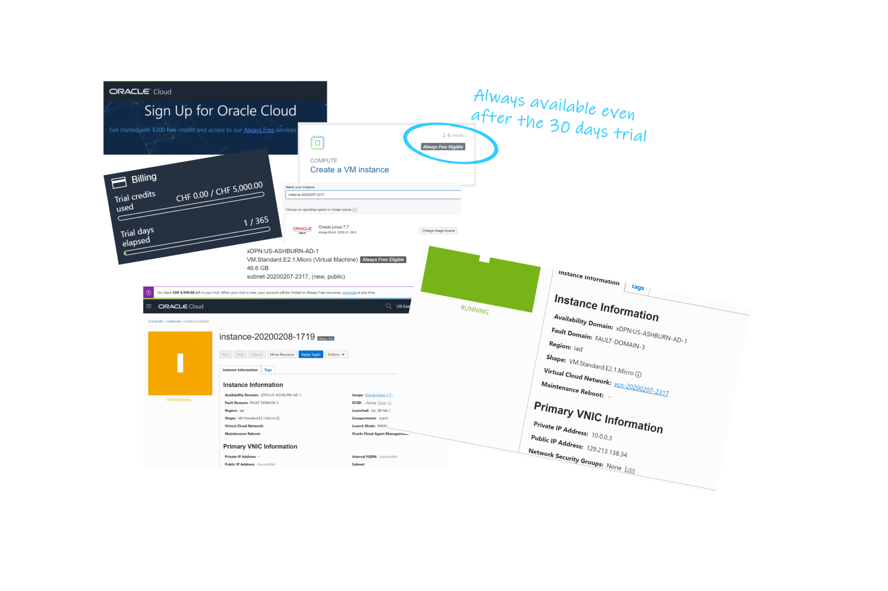
I’m connecting to the public IP Address with ssh (the public key is uploaded when creating the VM) and I’ll will run everything as root:
ssh opc@129.213.138.34
sudo su -
cat /etc/oracle-releaseI install docker engine (version 19.3 there)
yum install -y docker-engine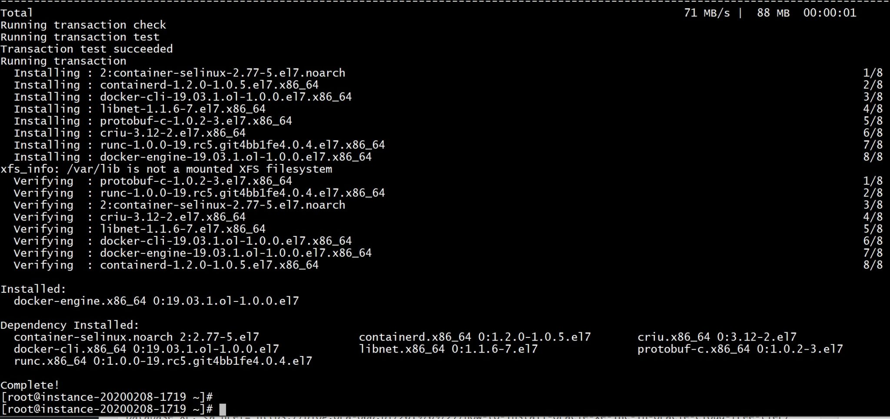
I start docker
systemctl start docker
docker info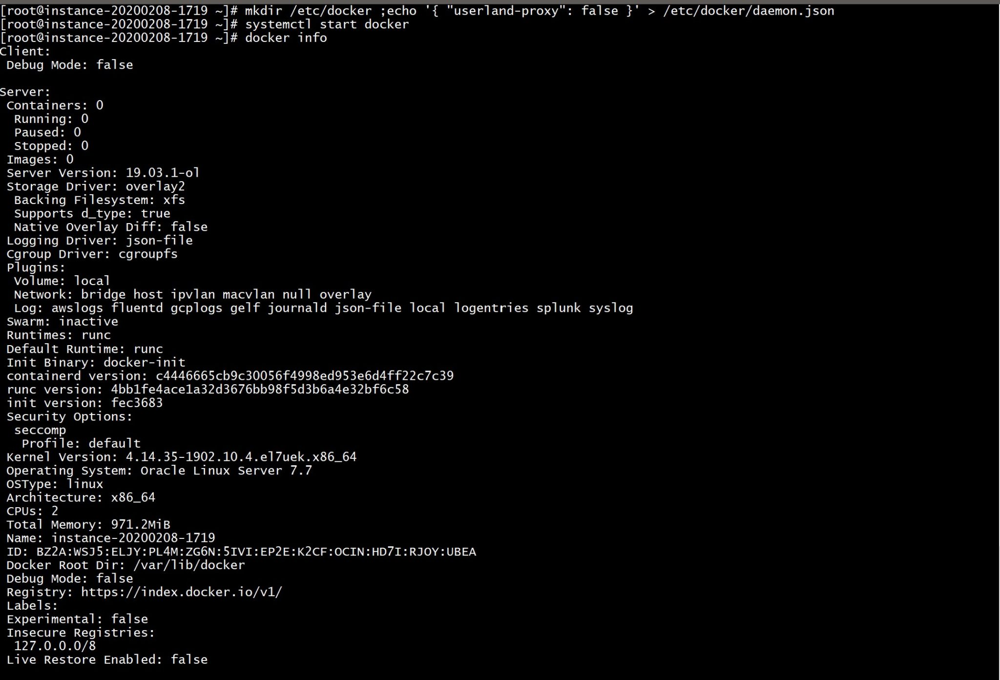
docker pull mcr.microsoft.com/mssql/rhel/server:2019-latest
docker images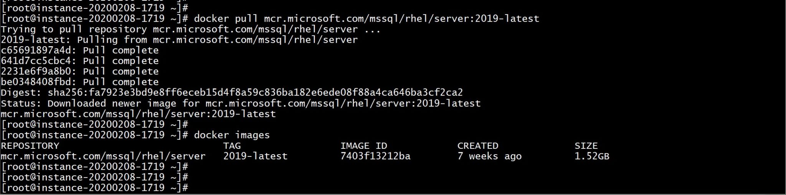
5 minutes to download a 1.5GB image. Now trying to start it.
The nice thing (when I compare to Oracle) is that we don’t have to manually accept the license terms with a click-through process. I just mention that I have read and accepted them with: ACCEPT_EULA=Y
I try to run it:
docker run \
-e "ACCEPT_EULA=Y" \
-e 'MSSQL_PID=Express' \
-p 1433:1433 \
-e 'SA_PASSWORD=**P455w0rd**' \
--name mssql \
mcr.microsoft.com/mssql/rhel/server:2019-latest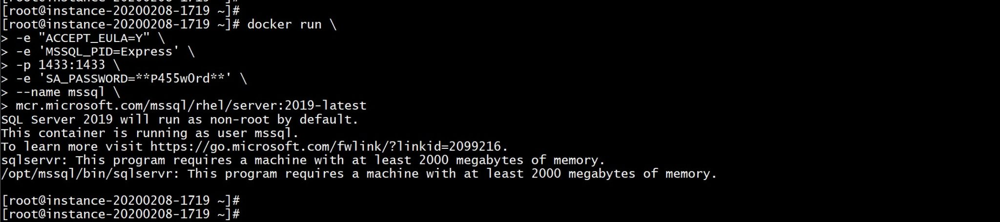
There’s a hardcoded prerequisite verification to check that the system has at least 2000 MB of RAM. And I have less than one GB here in this free tier:
awk '/^Mem/{print $0,$2/1024" MB"}' /proc/meminfo
Fortunately, there’s always a nice geek on the internet with an awesome solution: hack the sysinfo() system call with a LD_PRELOAD’ed wrapper : A Slightly Liberated Microsoft SQL Server Docker image
Let’s get it:
git clone https://github.com/justin2004/mssql_server_tiny.git
cd mssql_server_tiny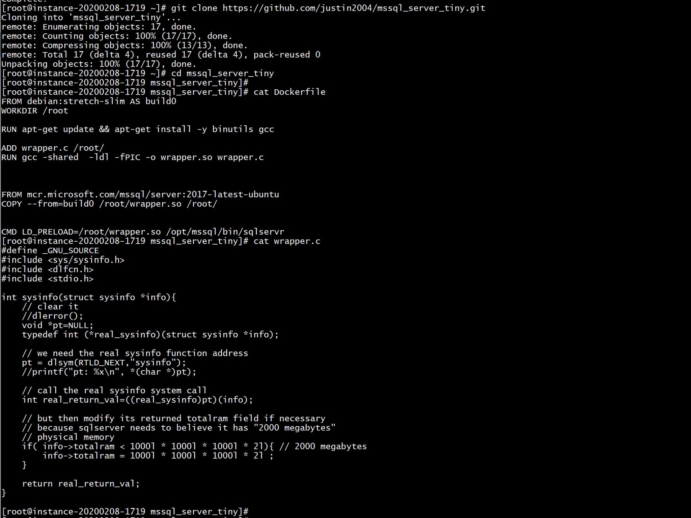
I changed the FROM to build from the 2019 RHEL image and I preferred to use /etc/ld.so.preload rather than overriding the CMD command with LD_LIBRARY:
FROM oraclelinux:7-slim AS build0
WORKDIR /root
RUN yum update -y && yum install -y binutils gcc
ADD wrapper.c /root/
RUN gcc -shared -ldl -fPIC -o wrapper.so wrapper.c
FROM mcr.microsoft.com/mssql/rhel/server:2019-latest
COPY --from=build0 /root/wrapper.so /root/
ADD wrapper.c /root/
USER root
RUN echo "/root/wrapper.so" > /etc/ld.so.preload
USER mssql
I didn’t change the wrapper for the sysinfo function:
#define _GNU_SOURCE
#include
#include
#include
int sysinfo(struct sysinfo *info){
// clear it
//dlerror();
void *pt=NULL;
typedef int (*real_sysinfo)(struct sysinfo *info);
// we need the real sysinfo function address
pt = dlsym(RTLD_NEXT,"sysinfo");
//printf("pt: %x\n", *(char *)pt);
// call the real sysinfo system call
int real_return_val=((real_sysinfo)pt)(info);
// but then modify its returned totalram field if necessary
// because sqlserver needs to believe it has "2000 megabytes"
// physical memory
if( info->totalram totalram = 1000l * 1000l * 1000l * 2l ;
}
return real_return_val;
}
I build the image from there:
docker build -t mssql .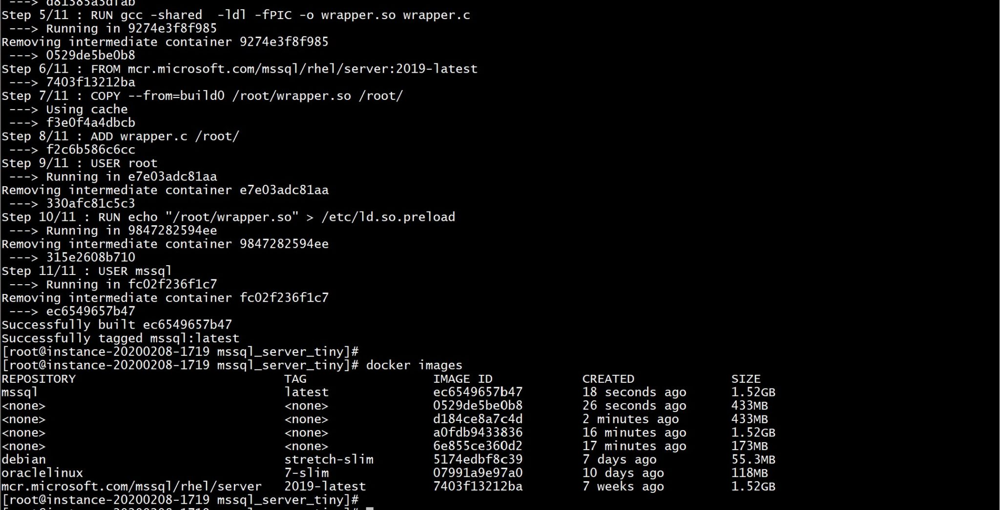
docker run -d \
-e "ACCEPT_EULA=Y" \
-e 'MSSQL_PID=Express' \
-p 1433:1433 \
-e 'SA_PASSWORD=**P455w0rd**' \
--name mssql \
mssql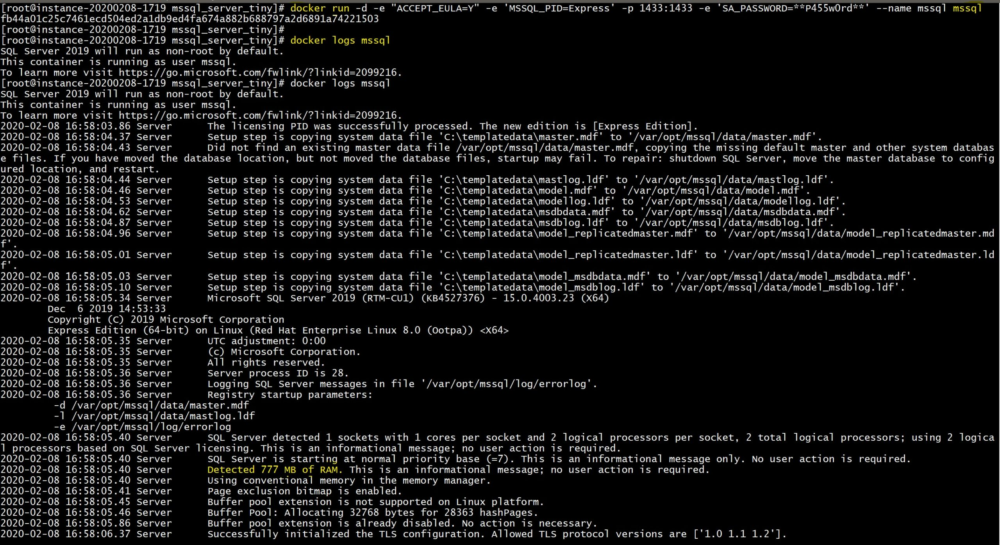
I wait until it is ready:
until docker logs mssql | grep -C10 "Recovery is complete." ; do sleep 1 ; done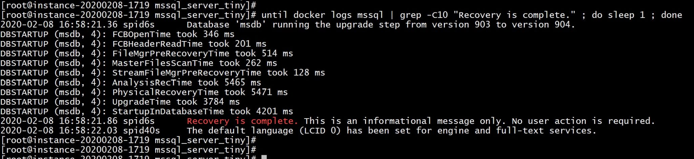
All is ok and I connect and check the version:
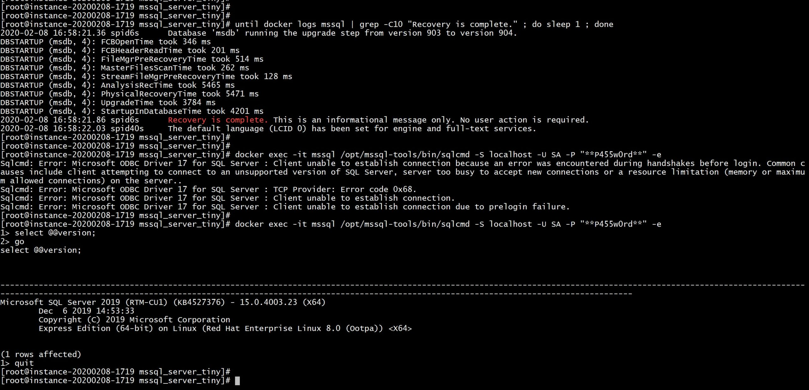
Well… as you can see my first attempt failed. I am running with very low memory here, and then many memory allocation problems can be expected. If you look at the logs after a while, many automatic system tasks fail. But that’s sufficient for a minimal lab and you can tweak some Linux and SQL Server parameters if you need it. Comments are welcome here for feedback and ideas…
The port 1433 is exposed here locally and it can be tunneled through ssh. This is a free lab environment always accessible from everywhere to do small tests in MS SQL, running on the Oracle free tier. Here is how I connect with DBeaver from my laptop, just mentioning the public IP address, private ssh key and connection information:
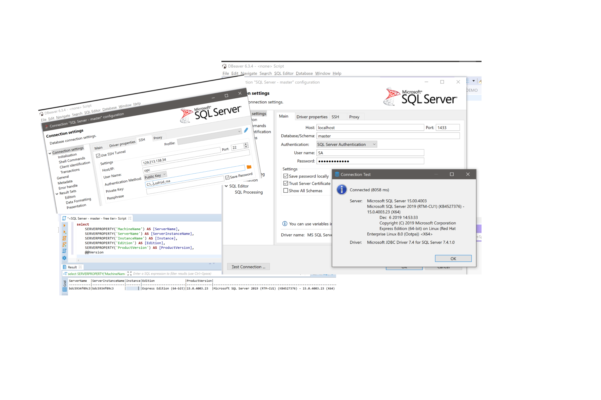